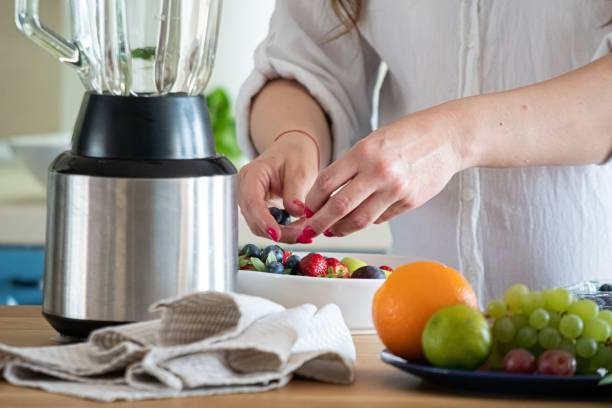
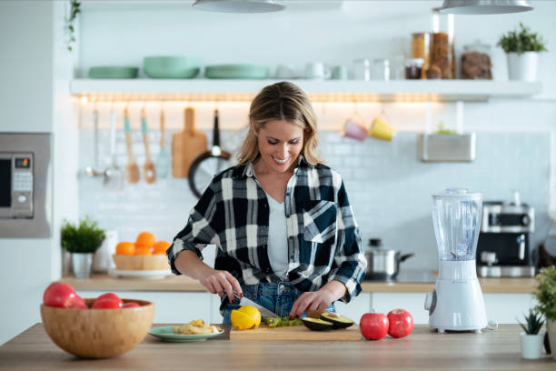

Check out our amazing weekly sales items below
Weekly Specials!

Grade-A Processor series
- Easy Assembly- The smart design lets you set the workbowl onto the base, and uses the lid as the locking mechanism. No more struggling to lock the bowl into place!
- 8-cup Work Bowl- The large capacity gives you plenty of room to work with when creating salsas, nut butters, hummus, and so much more. The possibilities are endless!
- S-Blade Blade- The stainless steel blade quickly chops and mixes for fast, consistent results

Grade-J1 Processor series
- Process tougher ingredients and mince meat with the improved four blade multipurpose blade design - minces meat in 10 seconds,* *Based on 500g chicken, beef and pork
- Quickly and easily turn cream into butter, whip cream and more with the included whisk accessory
- Quickly knead dough in the food processor with the included dough blade for fresh bread or pizza crust

Grade-A2 Processor series
- Easy Assembly- The smart design lets you set the workbowl onto the base, and uses the lid as the locking mechanism. No more struggling to lock the bowl into place!
- 8-cup Work Bowl- The large capacity gives you plenty of room to work with when creating salsas, nut butters, hummus, and so much more. The possibilities are endless!
- S-Blade Blade- The stainless steel blade quickly chops and mixes for fast, consistent results

Grade-Z2 Processor series
- Easy Assembly- The smart design lets you set the workbowl onto the base, and uses the lid as the locking mechanism. No more struggling to lock the bowl into place!
- 8-cup Work Bowl- The large capacity gives you plenty of room to work with when creating salsas, nut butters, hummus, and so much more. The possibilities are endless!
- S-Blade Blade- The stainless steel blade quickly chops and mixes for fast, consistent results
These fantastic deals are available for a limited time, so don't miss out!
Customer Guarantee:We're not just a business; we're a partner in your shopping journey. Our experienced customer service team is committed to providing you with the best support and guidance

Why Choose Us?

Quality Products: Our commitment to quality is unwavering. We source and produce products that meet the highest industry standards. From materials to manufacturing, we ensure that every item you purchase is built to last and perform exceptionally.

Affordable Prices: We believe that quality should be affordable for everyone. We strive to offer competitive prices without compromising on the excellence of our products. With us, you get the best value for your money.

Exceptional Customer Service: At our company, customers come first. Our dedicated customer support team is ready to assist you with any inquiries, issues, or concerns you may have. We are here to make your shopping experience smooth and enjoyable.
Sustainability and Responsibility: We are committed to sustainability and responsible business practices. Our products are designed with the environment in mind, and we work to reduce our carbon footprint.